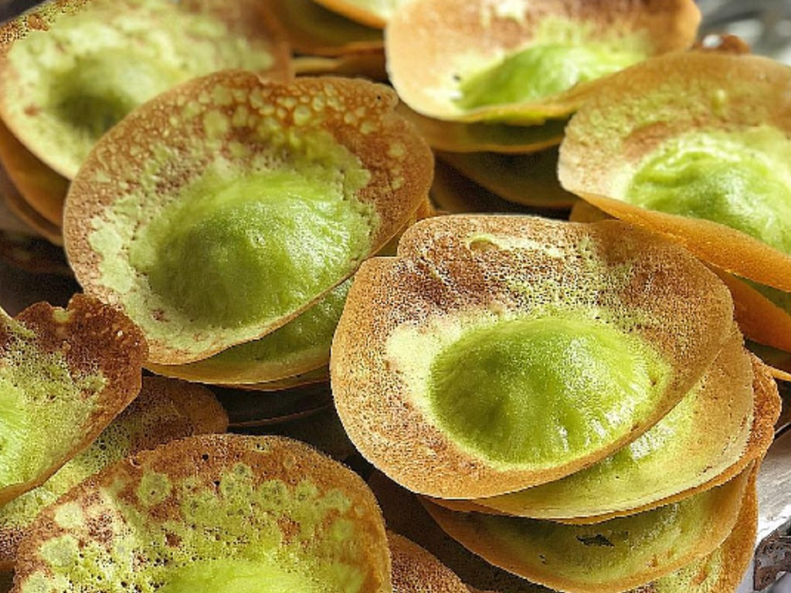

Kue tete adalah jajanan tradisional berbentuk setengah lingkaran dengan warna mencolok dan taburan kelapa parut di atasnya.
Kue ini memiliki tekstur lembut dan rasa manis yang khas, serta tampilan warna-warni yang menarik.